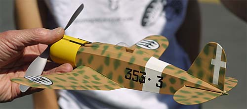
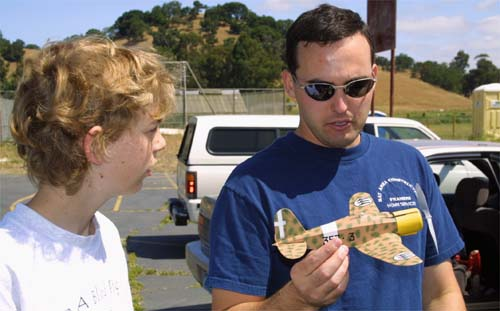
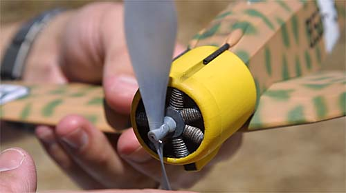
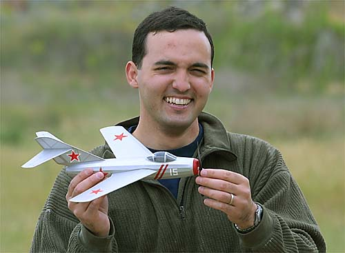

|
Fiat G-50 and MiG-15 More Examples of Jason McGuire's Craft |
|---|
| Marius was not the only one marveling at these models as Jason selflessly shared his techniques. Note the MiG's stealthy prop. It is all but invisible in flight. |




Copyright 2001-2015, Thayer Syme. All rights reserved